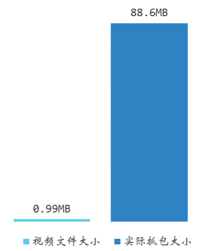
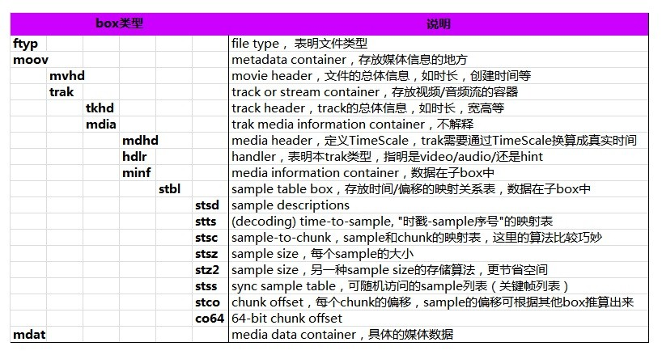
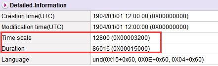
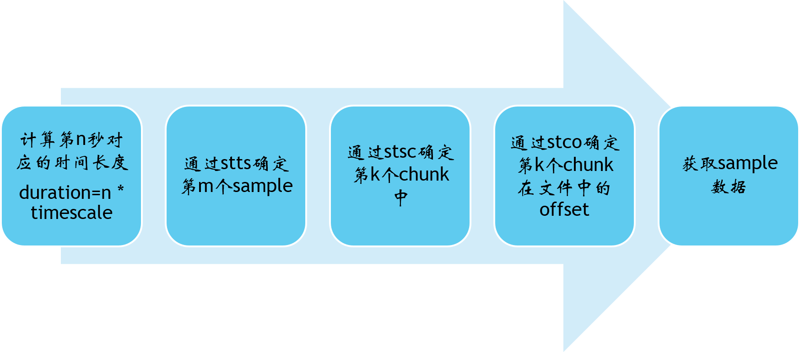

一、背景
视频作为重要的内容载体，在各项业务中的应用愈加频繁。而与之相关的测试也成为了新的挑战。在最近的工作中，碰到了一个严重的BUG：视频播放极其卡顿，同时产生大量重复流量。
BUG表现为点击视频播放后，菊花一直转动，无法播放流畅画面。对视频播放进行抓包分析，获取到的PCAP大小几乎是视频文件的100倍！（视频完全无法正常播放，故中途停止测试，否则远不止100倍的流量）

二、协议分析
流媒体协议有多种，在本例中使用的是HTTP协议。通过分析PCAP文件，发现存在大量且重复的HTTP请求
HTTP 206响应：含义为”Patial Content”。通常在下载一个较大的文件（例如视频）时，会分成多个Http请求，每个请求头中指定Range，表明需要目标资源的哪一部分。服务器通过206响应返回目标数据，同时在响应头中带上Content-Range和Content-Length指明实际返回哪些数据。
可以看到连续若干个Http请求的Range为：
1 | ... |
可以发现以下两个问题：
Range没有指定结束位置，区间没有闭合
如果Range只有起始位置，则表明请求从起始位置至文件尾所有的数据，服务器会尽量多返回数据。
请求的文件内容存在大量重复
可以猜测：大量的网络I/O导致了视频播放的卡顿，而重复请求的文件内容导致了流量浪费。但是依然存在两个问题：
- 为什么存在大量的请求？
- 为什么相邻的Http请求中的Range偏移量很大？
三、MP4视频格式初探
作为一种主流的视频封装格式，MP4其实是由一个个盒子（BOX）拼接、嵌套而成。一个MP4由最基本的3个BOX组成：
- ftyp：通常用来指明编码格式，兼容性等。通常ftyp放在文件最前面，使得播放器可以明确使用哪个格式对文件进行解析
- mdat：实际的媒体数据
- moov：经常讲到的“文件头”，所有的多媒体信息都在这里，其中还包含了很多子box，包括mvhd、trak等。存储了音量、尺寸、播放速度等方方面的信息。
借用网上一张图来展示一个常见的MP4所包含的所有BOX：

四、帧还原原理
当MP4播放到第n秒时，首先需要确认并获取每个trak中所对应的sample数据。这个过程就是帧还原。通常在某个时间点，需要两次帧还原的过程，分别确认audio和video的sample数据。
1、mdhd
mdhd中的内容如下所示：

time scale指的是1s所代表的时间单位数。duration指的是整个trak的时间长度。所以duration/timescale = 实际时长（s）。上述视频的实际时长就是86016 / 12800 = 6.72秒。
2、stbl
stbl中包含了帧还原所必要的信息。通过分析视频的帧结构或许可以找到bug的线索。
stsz
记录了sample数量和每个sample的大小。
| NO. | Sample size |
|---|---|
| 1. | 18600 |
| 2. | 901 |
| 3. | 1277 |
| 4. | 2062 |
| 5. | 2779 |
| … | … |
stts
提供了在同一个时间偏移量里面连续的sample序号， 以及samples的偏移量。递增这些偏移量，就可以建立一个完整的time-to-sample映射关系。
| No. | Sample count | Sample delta |
|---|---|---|
| 1. | 1 | 42 |
| 2. | 1 | 41 |
| 3. | 2 | 42 |
| 4. | 1 | 41 |
| 5. | 2 | 42 |
| … | … | … |
具体说来为了节省文件空间，MP4将偏移量相同的连续sample记录在表格的同一个条目中。表格中每个条目的含义为：
- 第1个sample的时间偏移量为42
- 第2个sample的时间偏移量为41
- 第3，4个sample的时间偏移量为42
- 第5个sample的时间偏移量为41
- …
当需要第n秒的sample时，首先通过 n * timescale得到duration，假设为100，那么根据上表可以得到对应第3个sample。
stsc
提供了sample和Chunk的关系。MP4将所有的sample进行分组（Chunk）,使用Chunk来组织所有的sample，不同的Chunk容量可以不同。
| No. | First chunk | Samples per chunk | Samples description index |
|---|---|---|---|
| 1. | 1 | 13 | 1 |
| 2. | 29 | 12 | 1 |
| 3. | 30 | 13 | 1 |
| 4. | 58 | 12 | 1 |
| 5. | 59 | 13 | 1 |
| … | … | … | … |
上面这张表的含义是：
- 第1~28个Chunk各自包含13个sample
- 第29个Chunk中包含12个sample
- 第30~57个Chunk中各自包含了13个sample
- …
如果需要第400个sample，则通过上表可以得到计算得到：400 = 13 * 28 + 12 * 1 + 13 * 1 + 11，所以第400个sample在第31个Chunk中(31=28+1+1+1)。
stco
提供了chunk在文件中的偏移量。
| No. | Chunk offset |
|---|---|
| 1. | 236840 |
| 2. | 250267 |
| 3. | 259341 |
| … | … |
3、还原流程

五、Sample跳动过大
通过分析问题MP4的帧格式既可一窥问题本质。获取第1秒时视频和音频的sample：
- 视频trak中第25个sample，位于第1个chunk中，chunk在文件中的偏移量为48，所以该sample在文件中的offset为121576，sample大小为28259
- 音频trak中第43个sample，位于第1个chunk中，chunk在文件中的偏移量为1004028，所以该sample在文件中的offset为1008770，sample大小为126。
又了解到播放器底层buffer尺寸为32KB = 32768。所以可以发现，同一个时间点对应的视频和音频sample在文件中的偏移量为887194，远远大于buffer尺寸，导致播放器不停发出http请求。
根本原因是音频和视频trak在视频文件中相距太远，导致buffer无法生效，不停触发http请求，且相邻请求的range偏移量很大。一图以蔽之：

六、显示顺序 VS 解码顺序
sample的解码与显示顺序不一致的话，moov中会包含一个ctts来表示这种信息。
| No. | Sample count | Sample offset |
|---|---|---|
| 1. | 1 | 1024 |
| 2. | 1 | 2048 |
| 3. | 1 | 1024 |
| 4. | 1 | 0 |
| 5. | 1 | 2048 |
| … | … | … |
ctts记录了【显示】与【解码】二者在时间上的差值，用来还原每个sample的显示顺序。就会导致sample在空间相邻但是时间上不相邻。此类特殊视频也可能导致同样的bug。
七、解决方法
对于sample跳动过大的视频，本质解决方法是如何检测此类情况，同时减少Http请求次数。目前的临时方案是依赖后台对所有外部视频进行转码，播放器本身根据sample跳动幅度动态缩放buffer尺寸。
对于sample在文件首尾来回跳动的极端特殊视频，还没有有效的方案。
八、后话
从常用的网络协议分析，到音视频格式解析，必须理解并运用每一个环节的知识点才能完成音视频的专项测试。